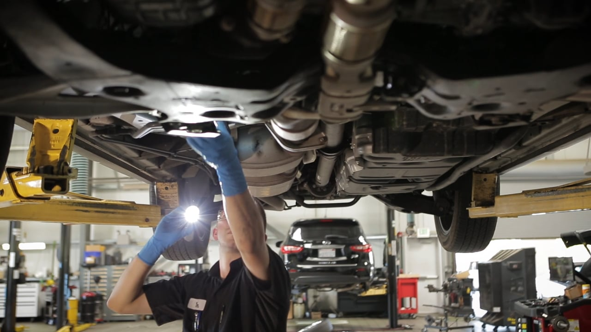
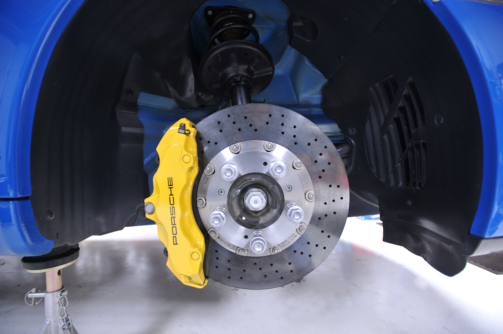
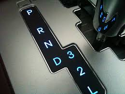

Housed in our modern premises, we have one of the most up-to-date and comprehensive workshops in ergergd.
Fully fitted bays with hoists mean that working on your vehicle is not only easier and safer - it's also quicker, saving you money.
We have qualified technicians who operate our hi tech equipment to keep your vehicle in tip-top condition
Car Servicing
All vehicles benefit from regular servicing, regardless of age, type or driving use. We offer a range of car servicing options for both petrol and diesel vehicles.
We also complete car servicing to warranty standards. A pickup and delivery service is also available for you within 5km of our location.
If you don’t know which car servicing option is right for you, don’t panic - the best thing to do is to come in and see the team. We'll look at how you use your car and it’s service history, and then recommend a car servicing option just for you.
Oil Change
Did you know: You should have an Oil change regularly; regardless of how many kilometres the vehicle has driven. If a vehicle is not used much, the oil in the engine still needs to be flushed and replaced. Old oil can degrade an engine, even when the vehicle is sitting in the garage.
Engine Management & Diagnostics
We have highly trained technicians to carry out all engine management diagnostic services. The computer technical equipment our workshops carry can locate all engine light fault codes & repair as necessary.
WOF - Warrant of Fitness
A Warrant of Fitness or WOF is required every six months for vehicles 6 years or older, and every 12 months for new vehicles. We can complete a WOF inspection with your vehicle service, saving you time and money.
We have fully qualified WOF inspectors. All WOF inspectors are fully experienced in vehicle mechanics and servicing. They complete regular updates and liaise with New Zealand Transport Agency (NZTA) on all WOF requirements.
If our WOF inspectors find any issues with your vehicle, the repair work can be completed onsite quickly and efficiently by our team of technicians. Your vehicle will then be re-inspected and a WOF issued.
Did you know: It’s a good idea to combine your WOF and vehicle service, because WOF inspections do not cover all aspects of your vehicle. For example engine, clutch, gearbox and differential; lubricant levels and condition; brake pad thickness or life expectancy; and paint work condition and rust in non-structural areas are not checked in WOF inspections, but they can be checked as part of a vehicle service.
Suspension, Shocks & Steering
Suspensions keep tyres in contact with the road surface, and eliminates road shock.
Shock absorbers are a key part of the suspension system.
If shocks and struts were like air filters or tyres, you would immediately know when they’d gone bad. But they’re not. Suspension, shocks and struts can wear out gradually over time, simply from normal use.
If your car suspension, shocks are faulty your car will
Take longer to Stop
May Aquaplane on wet roads
Have Poor Handling
Steering, is your vehicle veering to one side when the steering wheel is straight, or if you can hear noises when your vehicle is turning, you may have a suspension issue or it may also be a Wheel Alignment issue.
We can check your suspension and shock absorbers on a specialised meter which identifies any faults. Leaking or worn shock absorbers can decrease braking efficiency and cause vehicles to fail WOF inspections.
Did you know: Vehicles must be lowered correctly to gain a Warrant of Fitness. If you want to lower your suspension, see us for specialist support.
Clutch
Slipping or worn clutch? This damage your fly wheel causing unwanted additional expense not to mention the risk of becoming stranded and incurring rescue fees.
Clutch Service - This involves checking the free play (adjustment) in the clutch cable and adjusting if necessary, checking the clutch fluid (hydraulic system) & road testing vehicle.
Clutch Repairs / Replacements - If your car clutch needs repairs or replacements we can diagnose and repair / replace if necessary.
Car Air-Conditioning
Car Air-Conditioning systems need servicing approximately every 2 years (most air conditioning systems lose approx. 10-15% per year of refrigerant gas).
This service involves discharging, recharging & lubricating your refrigerant system. Also testing your air conditioning compressor oil if applicable & changing if necessary.
Please see our pricing menu for estimated costs
Exhaust and Mufflers
A clean car exhaust system is a sign that your vehicle is running well. If your car exhaust seems loud or is dirty, it’s best to get it checked out.
We can inspect your exhaust system in as little as 10 minutes, and exhaust inspections are included in all vehicle services. The team will also check that your car exhaust system is not leaking, which can lead to carbon monoxide fumes being released inside your vehicle.
We can install and repair both standard and modified car exhaust systems on vehicles of all shapes and sizes.
Did you know: A simple way to check your exhaust system is to look at the panels around the exhaust pipe. If they are grey and dirty, your exhaust is not running as cleanly as it should be - come in and see us.

Brakes
If your brakes are squealing, pulling the vehicle to one side or making your steering wheel shake, then it’s time to see the team.
Brakes can degrade slowly due to simple wear and tear, which can make it difficult for vehicle owners to see the changes. We can test your braking system and make any repairs necessary. Brake hoses and fluid can also be checked and replaced if necessary.
If you have any problems, or notice changes in your vehicle’s braking performance, come in and see us. Sometimes it can be a simple case of brake dust causing the brakes to squeal, but our technicians can identify and fix the problem, giving you peace of mind.
Did you know: Heavy braking use can attract moisture into the brake fluid, which can lead to ‘brake fade’. We recommend replacing brake fluid at least every two years.

Automatic Transmission Servicing
Automatic transmissions need flushing & servicing.
Automatic transmissions typically fail due to internally overheating.
This is usually a direct result of poor maintenance.
Automatic Transmission servicing will help extending the life of your transmission & in most cases providing smoother gear changes.
We only use Premium high grade fully synthetic transmission fluid.
Please see our pricing menu for estimated costs.

Cambelt / Timing Belt
A Cambelt /timing belt is situated in the front or side of your engine behind the plastic cambelt covers.
This belt has been designed to reduce friction & generate more horse power than previous component called the Timing Chain.
This belt should be changed every 100,000kms or 5 years, whatever comes first. In some engines there are 2 belts, a cambelt/timing belt or a balance belt.
Radiator Repairs and Radiator Flush
Radiator Repairs and Radiator Flush
A radiator is vital to the health of your engine; ensuring that it does not overheat and maintains an optimum operating temperature.
A Radiator cools the liquid that in turns cools your engine, thereby maintaining the correct operating temperature. A Radiator has a large surface area of thin fins for the liquid to pass though, over time these can be damaged by stones, filled with dirt and bugs or the plastic tanks attached to most radiators these days can crack with the constant heating and cooling during normal use.
It is important that with the change of seasons that the correct mixture of coolant to water is used, to little or too much can be a bad thing for your engine
Radiator Flush
A Radiator Flush cleans out all the sludge and other containments that accumulate in your cars radiator. A Radiator Flush helps to clear this accumulation so that the cooling liquid can flow properly though the radiator and thereby prevent overheating.